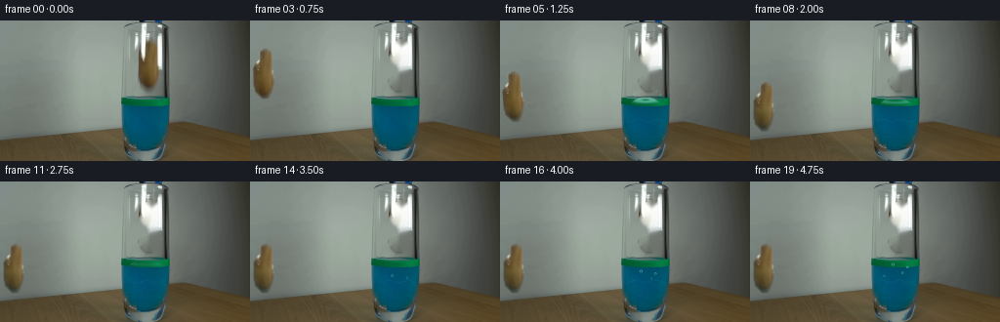
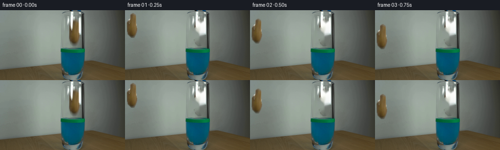
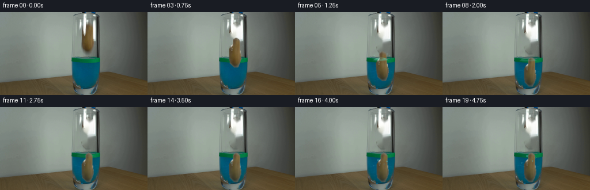

CODING AGENTS AS PIXEL WORLD MODELS
traex/DeepSeek-V4.1-Flash · 0142
点击播放 · 原生 RGB 像素
逐轮保存的候选
回放视频、检查图与代码变化。
每份候选均可单独播放。实际图片检查记录在下方工具轨迹中。
候选 01播放与检查图
点击播放 · 原生 RGB 像素

展开代码变化
--- 上一保存版本
+++ 本次保存版本
@@ -0,0 +1,380 @@
+from pathlib import Path
+
+import cv2
+import numpy as np
+from PIL import Image
+
+import artifact_io
+
+
+CASE_DIR = Path(__file__).resolve().parent
+WIDTH, HEIGHT, FRAME_COUNT, FPS = 256, 144, 20, 4
+
+# The glass mouth and body, measured from the first frame.
+GLASS_CX = 148.5
+GLASS_CY = 106.0
+GLASS_RX = 25.0
+GLASS_RY = 28.0
+SURFACE_Y = 80.0
+
+# Potato silhouette, in source-image coordinates.
+POTATO_X0, POTATO_Y0 = 138, 16
+POTATO_X1, POTATO_Y1 = 166, 74
+POTATO_CENTER = np.array([152.3, 45.0], dtype=np.float32)
+POTATO_ROWS = {
+ 20: (153, 156),
+ 21: (151, 157),
+ 22: (150, 159),
+ 23: (149, 159),
+ 24: (149, 160),
+ 25: (149, 160),
+ 26: (149, 160),
+ 27: (149, 160),
+ 28: (149, 160),
+ 29: (149, 160),
+ 30: (149, 160),
+ 31: (148, 160),
+ 32: (147, 160),
+ 33: (146, 160),
+ 34: (145, 160),
+ 35: (144, 160),
+ 36: (144, 160),
+ 37: (143, 160),
+ 38: (143, 160),
+ 39: (142, 160),
+ 40: (142, 160),
+ 41: (142, 160),
+ 42: (142, 161),
+ 43: (142, 161),
+ 44: (142, 161),
+ 45: (142, 161),
+ 46: (142, 161),
+ 47: (142, 161),
+ 48: (142, 161),
+ 49: (142, 162),
+ 50: (142, 162),
+ 51: (142, 162),
+ 52: (142, 162),
+ 53: (142, 162),
+ 54: (142, 162),
+ 55: (142, 162),
+ 56: (142, 162),
+ 57: (142, 162),
+ 58: (142, 161),
+ 59: (143, 161),
+ 60: (143, 161),
+ 61: (143, 160),
+ 62: (143, 160),
+ 63: (143, 160),
+ 64: (144, 159),
+ 65: (145, 159),
+ 66: (146, 158),
+ 67: (147, 158),
+ 68: (148, 157),
+ 69: (149, 157),
+ 70: (150, 156),
+}
+
+
+def smoothstep(edge0, edge1, value):
+ value = np.clip((value - edge0) / (edge1 - edge0), 0.0, 1.0)
+ return value * value * (3.0 - 2.0 * value)
+
+
+def glass_mask():
+ yy, xx = np.mgrid[0:HEIGHT, 0:WIDTH].astype(np.float32)
+ ellipse = ((xx - GLASS_CX) / GLASS_RX) ** 2 + ((yy - GLASS_CY) / GLASS_RY) ** 2
+ mask = smoothstep(1.04, 0.93, ellipse)
+ mask *= smoothstep(77.5, 80.0, yy)
+ return mask.astype(np.float32)
+
+
+def potato_silhouette():
+ mask = np.zeros((HEIGHT, WIDTH), dtype=np.uint8)
+ for y, (left, right) in POTATO_ROWS.items():
+ mask[y, left : right + 1] = 255
+ return mask
+
+
+def prepare_assets(source):
+ silhouette = potato_silhouette()
+ hsv = cv2.cvtColor(source, cv2.COLOR_RGB2HSV)
+ saturation = hsv[:, :, 1]
+ value = hsv[:, :, 2]
+
+ # The two bright vertical rails are the grabber jaws. Keep them in the
+ # clean plate while removing the potato that they partly occlude.
+ rail_zone = np.zeros_like(silhouette, dtype=bool)
+ rail_zone[8:76, 140:150] = True
+ rail_zone[8:76, 158:165] = True
+ bright_rails = rail_zone & (saturation < 48) & (value > 128)
+ remove = (silhouette > 0) & ~bright_rails
+ remove = cv2.dilate(remove.astype(np.uint8), np.ones((3, 3), np.uint8), iterations=1)
+ clean_plate = cv2.inpaint(source, remove, 4, cv2.INPAINT_TELEA)
+
+ # Build a movable potato sprite. Bright jaw pixels inside the silhouette
+ # are reconstructed from the surrounding potato texture.
+ crop = source[POTATO_Y0:POTATO_Y1, POTATO_X0:POTATO_X1].copy()
+ alpha_mask = silhouette[POTATO_Y0:POTATO_Y1, POTATO_X0:POTATO_X1]
+ rail_holes = bright_rails[POTATO_Y0:POTATO_Y1, POTATO_X0:POTATO_X1]
+ holes = (rail_holes & (alpha_mask > 0)).astype(np.uint8) * 255
+ if holes.any():
+ filled = cv2.inpaint(crop, holes, 2, cv2.INPAINT_TELEA)
+ crop = filled
+
+ alpha = cv2.GaussianBlur(alpha_mask, (3, 3), 0.45).astype(np.float32) / 255.0
+ # Slightly clean the low-resolution edges without removing the source grain.
+ sprite = crop.astype(np.float32)
+ return clean_plate, sprite, alpha
+
+
+def composite_potato(image, sprite, alpha, center, angle, scale=1.0):
+ src_center = (POTATO_CENTER[0] - POTATO_X0, POTATO_CENTER[1] - POTATO_Y0)
+ transform = cv2.getRotationMatrix2D(tuple(src_center), angle, scale)
+ target = (center[0] - POTATO_X0, center[1] - POTATO_Y0)
+ transform[0, 2] += target[0] - src_center[0]
+ transform[1, 2] += target[1] - src_center[1]
+
+ premultiplied = sprite * alpha[:, :, None]
+ warped_rgb = cv2.warpAffine(
+ premultiplied,
+ transform,
+ (WIDTH, HEIGHT),
+ flags=cv2.INTER_LINEAR,
+ borderMode=cv2.BORDER_CONSTANT,
+ borderValue=(0, 0, 0),
+ )
+ warped_alpha = cv2.warpAffine(
+ alpha,
+ transform,
+ (WIDTH, HEIGHT),
+ flags=cv2.INTER_LINEAR,
+ borderMode=cv2.BORDER_CONSTANT,
+ borderValue=0,
+ )
+ safe_alpha = np.maximum(warped_alpha, 1e-5)
+ rgb = warped_rgb / safe_alpha[:, :, None]
+
+ yy, xx = np.mgrid[0:HEIGHT, 0:WIDTH].astype(np.float32)
+ depth = smoothstep(SURFACE_Y + 0.5, SURFACE_Y + 44.0, yy)
+ tint = np.array([6.0, 67.0, 94.0], dtype=np.float32)
+ rgb = rgb * (1.0 - 0.20 * depth[:, :, None]) + tint * (0.20 * depth[:, :, None])
+
+ # A soft, cool reflected band makes the submerged part sit in the liquid.
+ liquid_rim = warped_alpha * depth * np.exp(-((yy - (SURFACE_Y + 9.0)) / 4.2) ** 2)
+ rgb = rgb + np.array([18.0, 43.0, 40.0], dtype=np.float32) * liquid_rim[:, :, None]
+
+ out = image * (1.0 - warped_alpha[:, :, None]) + rgb * warped_alpha[:, :, None]
+ return np.clip(out, 0.0, 255.0)
+
+
+def add_elliptical_ring(image, cx, cy, rx, ry, width, color, opacity, clip=None):
+ yy, xx = np.mgrid[0:HEIGHT, 0:WIDTH].astype(np.float32)
+ rx = max(float(rx), 0.8)
+ ry = max(float(ry), 0.6)
+ distance = np.sqrt(((xx - cx) / rx) ** 2 + ((yy - cy) / ry) ** 2)
+ ring = np.exp(-0.5 * ((distance - 1.0) / max(width, 0.15)) ** 2)
+ ring *= opacity
+ if clip is not None:
+ ring *= clip
+ return image * (1.0 - ring[:, :, None]) + np.array(color, dtype=np.float32) * ring[:, :, None]
+
+
+def add_surface_motion(image, frame_index, cup):
+ if frame_index < 4:
+ return image
+
+ age = frame_index - 4
+ ripple_alpha = max(0.0, 0.48 - age * 0.045)
+ surface_clip = cup * smoothstep(89.0, 79.0, np.mgrid[0:HEIGHT, 0:WIDTH][0])
+ for ring_index, delay in enumerate((0.0, 1.1, 2.4)):
+ radius = 3.5 + age * 2.7 + delay * 2.4
+ if radius < 27.0:
+ image = add_elliptical_ring(
+ image,
+ GLASS_CX,
+ SURFACE_Y + 0.5,
+ radius,
+ radius * 0.16 + 0.9,
+ 0.28,
+ (91, 184, 157),
+ ripple_alpha * (0.80 - ring_index * 0.18),
+ surface_clip,
+ )
+
+ # Small liquid lips around the point of entry.
+ if age <= 2:
+ lip_alpha = (0.55, 0.36, 0.22)[age]
+ image = add_elliptical_ring(
+ image,
+ GLASS_CX,
+ SURFACE_Y + 1.0,
+ 6.0 + age * 3.2,
+ 2.0 + age * 0.4,
+ 0.52,
+ (112, 198, 170),
+ lip_alpha,
+ surface_clip,
+ )
+ return image
+
+
+def add_splash(image, frame_index, cup):
+ if frame_index not in (4, 5):
+ return image
+ yy, xx = np.mgrid[0:HEIGHT, 0:WIDTH].astype(np.float32)
+ clip = smoothstep(66.0, 80.0, yy) * smoothstep(93.0, 80.0, yy)
+ clip *= smoothstep(122.0, 127.0, xx) * smoothstep(176.0, 171.0, xx)
+
+ if frame_index == 4:
+ droplets = (
+ (146.0, 76.0, 0.95),
+ (150.5, 72.5, 0.80),
+ (154.5, 74.5, 0.70),
+ (141.0, 75.0, 0.62),
+ (158.0, 75.5, 0.60),
+ (137.5, 78.0, 0.50),
+ (162.0, 78.0, 0.48),
+ )
+ else:
+ droplets = (
+ (143.0, 70.0, 0.52),
+ (147.0, 67.0, 0.60),
+ (151.5, 66.0, 0.68),
+ (156.0, 68.5, 0.58),
+ (160.0, 72.0, 0.48),
+ (137.0, 75.0, 0.44),
+ (164.0, 75.5, 0.40),
+ )
+
+ glow = np.zeros((HEIGHT, WIDTH), dtype=np.float32)
+ for x, y, strength in droplets:
+ glow += strength * np.exp(-(((xx - x) / 1.0) ** 2 + ((yy - y) / 1.15) ** 2))
+ glow *= clip
+ color = np.array((137.0, 215.0, 192.0), dtype=np.float32)
+ return image * (1.0 - glow[:, :, None]) + color * glow[:, :, None]
+
+
+def add_bubbles(image, frame_index, cup):
+ if frame_index < 4:
+ return image
+
+ bubbles = (
+ (4, 145.0, 119.0, 2.3, 1.15, 0.2),
+ (4, 155.0, 123.0, 2.0, 0.85, 1.5),
+ (5, 136.0, 120.0, 1.7, 0.75, 2.2),
+ (5, 160.0, 118.0, 2.2, 0.90, 0.8),
+ (5, 150.0, 126.0, 1.6, 0.70, 2.8),
+ (6, 141.0, 126.0, 1.8, 0.95, 1.2),
+ (6, 158.0, 125.0, 1.5, 0.70, 0.3),
+ (7, 145.0, 128.0, 1.4, 0.75, 2.5),
+ (7, 154.0, 129.0, 1.8, 0.85, 1.7),
+ (8, 139.0, 129.0, 1.5, 0.70, 0.5),
+ (8, 159.0, 128.0, 1.3, 0.65, 2.0),
+ (9, 149.0, 130.0, 1.4, 0.60, 1.0),
+ )
+ yy, xx = np.mgrid[0:HEIGHT, 0:WIDTH].astype(np.float32)
+ rim = np.zeros((HEIGHT, WIDTH), dtype=np.float32)
+ centers = np.zeros((HEIGHT, WIDTH), dtype=np.float32)
+
+ for spawn, x0, y0, speed, radius, phase in bubbles:
+ age = frame_index - spawn
+ if age < 0:
+ continue
+ y = y0 - speed * age
+ x = x0 + 1.15 * np.sin(phase + age * 0.9)
+ fade = max(0.0, 1.0 - max(0.0, y - 91.0) / 13.0)
+ if fade <= 0.0:
+ continue
+ dx = xx - x
+ dy = (yy - y) * 1.05
+ radial = np.sqrt(dx * dx + dy * dy)
+ ring = np.exp(-0.5 * ((radial - radius) / 0.34) ** 2) * fade
+ center = np.exp(-0.5 * (radial / max(radius * 0.55, 0.3)) ** 2) * fade
+ rim += 0.65 * ring
+ centers += 0.22 * center
+
+ rim *= cup
+ centers *= cup
+ color = np.array((92.0, 176.0, 174.0), dtype=np.float32)
+ image = image * (1.0 - centers[:, :, None]) + np.array((10.0, 56.0, 71.0)) * centers[:, :, None]
+ image = image * (1.0 - rim[:, :, None]) + color * rim[:, :, None]
+ return image
+
+
+def add_underwater_highlights(image, frame_index, cup):
+ if frame_index < 4:
+ return image
+ yy, xx = np.mgrid[0:HEIGHT, 0:WIDTH].astype(np.float32)
+ phase = (frame_index - 4) * 0.65
+ band1 = np.exp(-((yy - (102.0 + 1.4 * np.sin((xx - GLASS_CX) * 0.33 + phase))) / 0.65) ** 2)
+ band2 = np.exp(-((yy - (118.0 + 1.0 * np.sin((xx - GLASS_CX) * 0.29 - phase * 0.8))) / 0.55) ** 2)
+ horizontal = smoothstep(127.0, 132.0, xx) * smoothstep(171.0, 166.0, xx)
+ vertical = smoothstep(84.0, 88.0, yy) * smoothstep(132.0, 126.0, yy)
+ glow = (0.055 * band1 + 0.035 * band2) * horizontal * vertical * cup
+ color = np.array((34.0, 116.0, 125.0), dtype=np.float32)
+ return image + color * glow[:, :, None]
+
+
+def potato_pose(frame_index):
+ # center x, center y, clockwise angle, scale
+ poses = {
+ 1: (152.2, 47.0, 0.8, 1.000),
+ 2: (152.0, 58.5, -1.2, 1.004),
+ 3: (151.8, 70.0, 1.2, 1.010),
+ 4: (151.5, 81.5, 3.0, 1.015),
+ 5: (151.2, 93.5, 4.5, 1.010),
+ 6: (151.6, 101.5, 2.2, 1.000),
+ 7: (151.8, 105.0, 0.7, 0.995),
+ 8: (151.9, 103.7, -0.5, 0.993),
+ 9: (151.8, 104.8, 0.4, 0.994),
+ 10: (151.9, 104.1, -0.3, 0.995),
+ 11: (151.9, 104.5, 0.2, 0.995),
+ 12: (151.9, 104.3, -0.1, 0.995),
+ 13: (151.9, 104.4, 0.1, 0.995),
+ 14: (151.9, 104.4, 0.0, 0.995),
+ 15: (151.9, 104.4, 0.0, 0.995),
+ 16: (151.9, 104.4, 0.0, 0.995),
+ 17: (151.9, 104.4, 0.0, 0.995),
+ 18: (151.9, 104.4, 0.0, 0.995),
+ 19: (151.9, 104.4, 0.0, 0.995),
+ }
+ return poses[frame_index]
+
+
+def make_frames(source):
+ clean_plate, sprite, alpha = prepare_assets(source)
+ cup = glass_mask()
+ frames = np.empty((FRAME_COUNT, HEIGHT, WIDTH, 3), dtype=np.uint8)
+ frames[0] = source
+
+ for frame_index in range(1, FRAME_COUNT):
+ image = clean_plate.astype(np.float32)
+ image = add_underwater_highlights(image, frame_index, cup)
+ image = add_surface_motion(image, frame_index, cup)
+
+ cx, cy, angle, scale = potato_pose(frame_index)
+ image = composite_potato(image, sprite, alpha, (cx, cy), angle, scale)
+
+ # Foreground ripples cross in front of the submerged potato.
+ if frame_index >= 4:
+ image = add_surface_motion(image, frame_index, cup)
+ image = add_splash(image, frame_index, cup)
+ image = add_bubbles(image, frame_index, cup)
+
+ frames[frame_index] = np.clip(np.rint(image), 0, 255).astype(np.uint8)
+
+ # The contract requires an exact source first frame.
+ frames[0] = source
+ return frames
+
+
+def main():
+ source = np.asarray(Image.open(CASE_DIR / "first_frame.png").convert("RGB"), dtype=np.uint8)
+ assert source.shape == (HEIGHT, WIDTH, 3)
+ frames = make_frames(source)
+ artifact_io.save(frames, CASE_DIR)
+
+
+if __name__ == "__main__":
+ main()
候选 02播放与检查图
点击播放 · 原生 RGB 像素


展开代码变化
--- 上一保存版本
+++ 本次保存版本
@@ -131,9 +131,10 @@
def composite_potato(image, sprite, alpha, center, angle, scale=1.0):
src_center = (POTATO_CENTER[0] - POTATO_X0, POTATO_CENTER[1] - POTATO_Y0)
transform = cv2.getRotationMatrix2D(tuple(src_center), angle, scale)
- target = (center[0] - POTATO_X0, center[1] - POTATO_Y0)
- transform[0, 2] += target[0] - src_center[0]
- transform[1, 2] += target[1] - src_center[1]
+ # warpAffine output is in full-frame coordinates, so the final translation
+ # moves the crop-local center to the requested absolute image center.
+ transform[0, 2] += center[0] - src_center[0]
+ transform[1, 2] += center[1] - src_center[1]
premultiplied = sprite * alpha[:, :, None]
warped_rgb = cv2.warpAffine(
候选 03播放与检查图
候选 04播放与检查图
点击播放 · 原生 RGB 像素

展开代码变化
--- 上一保存版本
+++ 本次保存版本
@@ -352,7 +352,6 @@
for frame_index in range(1, FRAME_COUNT):
image = clean_plate.astype(np.float32)
image = add_underwater_highlights(image, frame_index, cup)
- image = add_surface_motion(image, frame_index, cup)
cx, cy, angle, scale = potato_pose(frame_index)
image = composite_potato(image, sprite, alpha, (cx, cy), angle, scale)
可观测工具轨迹
实际执行的命令与返回图片。
命令 1exit 0
/bin/bash -c "pwd && rg --files -g '"'!*.git*'"'"
命令 2exit 0
/bin/bash -c "printf '%s\\n' '--- prompt.txt ---'; sed -n '1,240p' prompt.txt; printf '%s\\n' '--- GENERATION_RULES.md ---'; sed -n '1,300p' GENERATION_RULES.md"
命令 3exit 0
/bin/bash -c "file first_frame.png; identify -verbose first_frame.png 2>/dev/null | sed -n '1,100p'; ffmpeg -version 2>/dev/null | head -n 3"
命令 4exit 0
/bin/bash -c "python3 - <<'PY'
from PIL import Image
import numpy as np
im=Image.open('first_frame.png').convert('RGB')
a=np.asarray(im)
print('size',im.size,'mode',im.mode,'shape',a.shape,'dtype',a.dtype)
print('min/max/mean/std',a.min((0,1)),a.max((0,1)),a.mean((0,1)),a.std((0,1)))
# quantized dominant colors
q=(a//16*16).reshape(-1,3)
u,c=np.unique(q,axis=0,return_counts=True)
idx=np.argsort(c)[-30:][::-1]
for i in idx: print(tuple(u[i]), int(c[i]))
PY"命令 5exit 0
/bin/bash -c "sed -n '1,260p' artifact_io.py; printf '\\n--- player ---\\n'; sed -n '1,300p' player_template.html"
命令 6exit 0
/bin/bash -c "python3 - <<'PY' import importlib.util for m in ['numpy','PIL','cv2','scipy','skimage','imageio','matplotlib']: print(m, bool(importlib.util.find_spec(m))) PY command -v ffmpeg || true; command -v convert || true"
命令 7exit 0
/bin/bash -c "python3 - <<'PY'
import cv2, numpy as np
im=cv2.imread('first_frame.png')[:,:,::-1]
# kmeans in Lab perhaps
lab=cv2.cvtColor(im,cv2.COLOR_RGB2LAB).reshape(-1,3).astype(np.float32)
crit=(cv2.TERM_CRITERIA_EPS+cv2.TERM_CRITERIA_MAX_ITER,100,0.2)
_,labels,cent=cv2.kmeans(lab,16,None,crit,10,cv2.KMEANS_PP_CENTERS)
cent_rgb=cv2.cvtColor(cent.astype(np.uint8)[None,:,:],cv2.COLOR_LAB2RGB)[0]
counts=np.bincount(labels.ravel())
order=np.argsort(counts)[::-1]
for k in order:
print(k, counts[k], tuple(cent_rgb[k]))
# boundaries/object positions based on saturation and color masks
hsv=cv2.cvtColor(im,cv2.COLOR_RGB2HSV)
print('HSV percentiles sat',np.percentile(hsv[:,:,1],[50,75,90,95,99]))
print('value percentiles',np.percentile(hsv[:,:,2],[1,5,10,25,50,75,90,95,99]))
PY"命令 8exit 0
/bin/bash -c "python3 - <<'PY'
from PIL import Image
im=Image.open('first_frame.png')
# enlarged source for inspection
im.resize((1024,576),Image.Resampling.NEAREST).save('.tmp/source_4x.png')
# grayscale with colored coordinate grid
import numpy as np
from PIL import ImageDraw,ImageFont
base=im.resize((1024,576),Image.Resampling.NEAREST).convert('RGB')
d=ImageDraw.Draw(base)
for x in range(0,256,16):
xx=x*4; d.line([(xx,0),(xx,576)],fill=(255,60,60),width=1); d.text((xx+2,2),str(x),fill=(255,80,80))
for y in range(0,144,16):
yy=y*4; d.line([(0,yy),(1024,yy)],fill=(255,60,60),width=1); d.text((2,yy+1),str(y),fill=(255,80,80))
base.save('.tmp/source_grid.png')
PY"命令 9exit 0
/bin/bash -c "python3 - <<'PY'
from PIL import Image
import numpy as np
im=np.asarray(Image.open('first_frame.png').convert('RGB'))
# print coarse ascii classes on 4x4 sampling
# class based hue/sat/value, brightness
import cv2
hsv=cv2.cvtColor(im,cv2.COLOR_RGB2HSV)
for y in range(0,144,4):
s=''
for x in range(0,256,4):
h,sa,v=hsv[y:y+4,x:x+4].reshape(-1,3).mean(0)
if sa>120 and h>70 and h<110: c='G' # green
elif sa>120 and 90<=h<=130: c='B' # blue
elif sa>100 and h<35: c='Y' # wood
elif sa>100 and 35<h<90: c='g'
elif v>170: c='W'
elif v<55: c='#'
elif v<85: c='+'
elif v<120: c='.'
else: c=' '
s+=c
print(f'{y:03d} {s}')
PY"命令 10exit 0
/bin/bash -c "python3 - <<'PY'
from PIL import Image
import numpy as np
im=np.asarray(Image.open('first_frame.png').convert('RGB'))
for y in [20,28,36,44,52,60,68,72,76,80,84,88,92,96,100,104,108,112,116,120,124,128,132,136]:
print('\\ny',y)
for x in range(96,224,8):
r,g,b=im[y,x]
print(f'{x}:{r:02x}{g:02x}{b:02x}',end=' ')
print()
PY"命令 11exit 0
/bin/bash -c "python3 - <<'PY'
from PIL import Image
import numpy as np, cv2
im=np.asarray(Image.open('first_frame.png').convert('RGB'))
hsv=cv2.cvtColor(im,cv2.COLOR_RGB2HSV)
# crop x112..184, y8..140. aggregate 2x2 and classify
for y in range(8,140,2):
s=''
for x in range(112,184,2):
p=im[y:y+2,x:x+2].reshape(-1,3).mean(0)
h,sa,v=hsv[y:y+2,x:x+2].reshape(-1,3).mean(0)
r,g,b=p
if sa>100 and h>=70 and h<=100 and g>r*1.4: c='G'
elif sa>100 and h>=90 and h<=125 and b>r*1.5: c='B'
elif sa>70 and h<32 and r>g*1.15: c='P' # brown potato/wood
elif v>180: c='W'
elif v>145: c='w'
elif v>115: c='-'
elif v>85: c='.'
elif v>60: c=','
else: c='#'
s+=c
print(f'{y:03d} {s}')
PY"命令 12exit 0
/bin/bash -c "python3 - <<'PY'
import cv2,numpy as np
im=cv2.imread('first_frame.png')[:,:,::-1]
hsv=cv2.cvtColor(im,cv2.COLOR_RGB2HSV)
H,S,V=cv2.split(hsv)
for name,m in {
'brown':(H<35)&(S>70)&(V<170),
'blue':(H>90)&(H<130)&(S>100)&(V<170),
'darkblue':(H>90)&(H<135)&(S>50)&(V<90),
'green':(H>65)&(H<100)&(S>90),
'dark':(V<80),
'bright':(V>165),
}.items():
n,l,st,cent=cv2.connectedComponentsWithStats(m.astype(np.uint8),8)
arr=[]
for i in range(1,n):
x,y,w,h,a=st[i]
if a>=10: arr.append((a,x,y,w,h))
print('\\n',name, sorted(arr,reverse=True)[:20])
PY"命令 13exit 0
/bin/bash -c "python3 - <<'PY'
from PIL import Image
im=Image.open('first_frame.png')
# ROI includes grabber+potato+glass, 8x nearest
im.crop((104,0,200,144)).resize((768,1152),Image.Resampling.NEAREST).save('.tmp/roi8x.png')
# color masks crop enlarged
import numpy as np, cv2
a=np.asarray(im.convert('RGB')); hsv=cv2.cvtColor(a,cv2.COLOR_RGB2HSV); H,S,V=cv2.split(hsv)
m=np.zeros_like(a)
m[(H<38)&(S>65)&(V>35)]=(255,120,40)
m[(H>62)&(H<105)&(S>75)]=(40,255,40)
m[(H>=105)&(H<140)&(S>55)]=(30,150,255)
Image.fromarray(m).crop((104,0,200,144)).resize((768,1152),Image.Resampling.NEAREST).save('.tmp/mask8x.png')
PY"命令 14exit 0
/bin/bash -c "python3 - <<'PY'
from PIL import Image
import numpy as np
im=np.asarray(Image.open('first_frame.png').convert('RGB'))
# crop 8x but output high-contrast edge/gradient representation to understand shapes
import cv2
roi=im[0:144,104:200]
g=cv2.cvtColor(roi,cv2.COLOR_RGB2GRAY)
e=cv2.Canny(roi,35,90)
out=np.zeros((*g.shape,3),np.uint8)
out[:]= (g[:,:,None]//2)
out[e>0]=(255,50,40)
Image.fromarray(out).resize((768,1152),Image.Resampling.NEAREST).save('.tmp/edges8x.png')
# print edges at key y as x intervals
for y in range(0,144,2):
xs=np.where(e[y]>0)[0]+104
# group contiguous
groups=[]
if len(xs):
st=pr=xs[0]
for x in xs[1:]:
if x>pr+1: groups.append((int(st),int(pr))); st=x
pr=x
groups.append((int(st),int(pr)))
print(f'{y:03d}',groups)
PY"命令 15exit 0
/bin/bash -c "python3 - <<'PY'
from PIL import Image
import numpy as np
im=np.asarray(Image.open('first_frame.png').convert('RGB'))
# 2x2 grayscale ascii full image, inverse brightness chars
chars=' .:-=+*#%@'
g=(im[:,:,0]*.299+im[:,:,1]*.587+im[:,:,2]*.114)
for y in range(0,144,2):
s=''
for x in range(0,256,2):
v=g[y:y+2,x:x+2].mean()
s+=chars[min(9,int(v/256*10))]
print(f'{y:03d} {s}')
PY"命令 16exit 0
/bin/bash -c "python3 - <<'PY'
from PIL import Image
import numpy as np
im=np.asarray(Image.open('first_frame.png').convert('RGB'))
# report row/col profiles in roi and selected exact RGB patches
for box in [(115,0,180,80),(120,8,175,78),(124,80,174,140),(110,0,180,144)]:
x0,y0,x1,y1=box
roi=im[y0:y1,x0:x1]
print('box',box,'mean',roi.mean((0,1)),'std',roi.std((0,1)))
# candidate background median by strips
for box in [(0,0,120,40),(0,40,120,80),(180,0,250,40),(180,40,250,80),(0,80,100,110),(0,110,100,144),(100,130,160,144),(180,120,240,144)]:
x0,y0,x1,y1=box; r=im[y0:y1,x0:x1]
print(box, 'mean',np.round(r.mean((0,1)),1), 'med',np.median(r.reshape(-1,3),0).astype(int))
PY"命令 17exit 0
/bin/bash -c "python3 - <<'PY'
from PIL import Image
import numpy as np
im=np.asarray(Image.open('first_frame.png').convert('RGB'))
# 4x ROI block means in hex, x112..184 step4, y0..80 step4
for y in range(0,80,4):
print('y',y)
for x in range(112,184,4):
p=np.median(im[y:y+4,x:x+4].reshape(-1,3),0).astype(int)
print(f'{x}:{p[0]:02x}{p[1]:02x}{p[2]:02x}',end=' ')
print()
PY"命令 18exit 0
/bin/bash -c "python3 - <<'PY'
import cv2,numpy as np
im=cv2.imread('first_frame.png')[:,:,::-1]
hsv=cv2.cvtColor(im,cv2.COLOR_RGB2HSV)
H,S,V=[x.astype(float) for x in cv2.split(hsv)]
# brown mask in main region
m=((H<40)&(S>60)&(V>30)&(V<180)).astype(np.uint8)
m[:18]=0;m[:, :120]=0;m[:,170:]=0
n,l,st,c=cv2.connectedComponentsWithStats(m,8)
for i in range(1,n):
x,y,w,h,a=st[i]
if a>30:
print('component',i,'stats',x,y,w,h,a,'centroid',c[i])
# per row extents of comp
for yy in range(y,y+h,4):
xs=np.where(l[yy]==i)[0]
if len(xs): print(' ',yy,int(xs.min()),int(xs.max()),len(xs))
PY"命令 19exit 0
/bin/bash -c "python3 - <<'PY'
from PIL import Image
import numpy as np
im=np.asarray(Image.open('first_frame.png').convert('RGB'))
# Detailed y/x intervals by manually-selected masks to infer liquid boundaries
import cv2
hsv=cv2.cvtColor(im,cv2.COLOR_RGB2HSV); H,S,V=cv2.split(hsv)
m=(H>80)&(H<130)&(S>65)&(V<150)
for y in range(72,142,2):
xs=np.where(m[y,100:190])[0]+100
if len(xs):
print(y,int(xs.min()),int(xs.max()),len(xs), 'median',int(np.median(xs)))
PY"命令 20exit 0
/bin/bash -c "python3 - <<'PY'
from PIL import Image
import numpy as np
im=np.asarray(Image.open('first_frame.png').convert('RGB'))
for y in range(0,82,4):
vals=[]
for x in range(120,177,2):
r,g,b=im[y,x]
if max(r,g,b)<70: c='#'
elif r>g*1.15 and r>b*1.3: c='P'
elif g>r*1.25 and g>b*1.15: c='G'
elif b>r*1.5 and b>g*1.1: c='B'
elif max(r,g,b)>190: c='W'
elif max(r,g,b)>140: c='w'
elif max(r,g,b)>100: c='-'
elif max(r,g,b)>75: c='.'
else: c=','
vals.append(c)
print(f'{y:03d} x120 '+''.join(vals))
PY"命令 21exit 0
/bin/bash -c "python3 - <<'PY'
import cv2,numpy as np
im=cv2.imread('first_frame.png')[:,:,::-1]
hsv=cv2.cvtColor(im,cv2.COLOR_RGB2HSV)
H,S,V=[x.astype(float) for x in cv2.split(hsv)]
# color masks
masks={
'brown': (H<35)&(S>50)&(V<180),
'blue': (H>90)&(H<135)&(S>70),
'green': (H>55)&(H<100)&(S>70),
'dark': V<80,
'bright': V>190,
}
for name,m in masks.items():
n,l,st,c=cv2.connectedComponentsWithStats(m.astype(np.uint8),8)
print('\\n'+name)
for i in range(1,n):
x,y,w,h,a=st[i]
if a>=8:
print(f'{a:5d} bbox=({x},{y},{w},{h}) c=({c[i][0]:.1f},{c[i][1]:.1f})')
# print H/S/V at grid for central area, every 4 px x=120..176 y=0..80
print('\\ncentral HSV grid: entries H,S,V')
for y in range(0,84,4):
print('y',y)
for x in range(120,180,4):
hh,ss,vv=hsv[y:y+4,x:x+4].reshape(-1,3).mean(0)
print(f'{x:3d}:{hh:3.0f},{ss:3.0f},{vv:3.0f}',end=' ')
print()
PY"命令 22exit 0
/bin/bash -c "python3 - <<'PY'
import cv2,numpy as np
im=cv2.imread('first_frame.png')[:,:,::-1]
hsv=cv2.cvtColor(im,cv2.COLOR_RGB2HSV); H,S,V=[x.astype(float) for x in cv2.split(hsv)]
for condname,m in [
('loose',(H<42)&(S>45)&(V<190)),
('strict',(H<35)&(S>65)&(V<165)),
]:
m[:18]=0;m[:, :138]=0;m[:,166:]=0
m=m.astype(np.uint8)
n,l,st,c=cv2.connectedComponentsWithStats(m,8)
ids=[i for i in range(1,n) if st[i,4]>50]
if not ids: continue
i=max(ids,key=lambda j:st[j,4])
print('\\n',condname,'stats',st[i].tolist())
for y in range(18,72,2):
xs=np.where(l[y]==i)[0]
if len(xs): print(f'{y:3d}: {xs.min()}..{xs.max()} ({len(xs)})')
# silhouette stats using hue/sat after convex hull
PY"命令 23exit 0
/bin/bash -c "python3 - <<'PY'
from PIL import Image
import numpy as np
im=np.asarray(Image.open('first_frame.png').convert('RGB'))
# identify rows/cols in source where vertical surfaces begin
# gradient profile averaged
import cv2
g=cv2.cvtColor(im,cv2.COLOR_RGB2GRAY).astype(float)
gx=np.abs(np.diff(g,axis=1)); gy=np.abs(np.diff(g,axis=0))
print('top gx', sorted(enumerate(gx.mean(0)),key=lambda z:z[1],reverse=True)[:25])
print('top gy', sorted(enumerate(gy.mean(1)),key=lambda z:z[1],reverse=True)[:25])
PY"命令 24exit 0
/bin/bash -c "python3 - <<'PY'
from PIL import Image
import numpy as np, cv2
im=np.asarray(Image.open('first_frame.png').convert('RGB'))
# create huge nearest center plus exact coordinate axes without text to inspect via pixel sampling? Also save crop files
Image.fromarray(im[0:90,135:180]).resize((900,1800),Image.Resampling.NEAREST).save('.tmp/grabber15x.png')
Image.fromarray(im[78:144,118:180]).resize((930,990),Image.Resampling.NEAREST).save('.tmp/liquid15x.png')
Image.fromarray(im[15:80,135:168]).resize((660,1300),Image.Resampling.NEAREST).save('.tmp/potato20x.png')
PY"命令 25exit 0
/bin/bash -c "python3 - <<'PY'
from PIL import Image
import numpy as np
im=np.asarray(Image.open('first_frame.png').convert('RGB'))
# analyze RGB patches on potato manually row interval & print quantiles
for y in range(20,70,4):
print('y',y)
for x in range(140,164,4):
p=im[y:y+4,x:x+4].reshape(-1,3)
print(f'{x}:mean{tuple(np.round(p.mean(0)).astype(int))} med{tuple(np.median(p,0).astype(int))}',end=' | ')
print()
PY"命令 26exit 0
/bin/bash -c "python3 - <<'PY'
import cv2,numpy as np
im=cv2.imread('first_frame.png')[:,:,::-1]
# print per row RGB from x138..165 at y=10..79 with compact color labels + values every x
for y in range(10,80,2):
s=''
for x in range(138,166):
r,g,b=map(int,im[y,x])
if r<35 and g<40 and b<40: c='K'
elif r>g*1.2 and r>b*1.5 and r>65: c='O'
elif g>r*1.12 and g>b*1.1: c='G'
elif b>r*1.35 and b>g*1.1: c='B'
elif r+g+b>600: c='W'
elif r+g+b>450: c='w'
elif r+g+b>330: c='-'
elif r+g+b>240: c='.'
else: c=','
s+=c
print(f'{y:02d} {s}')
PY"命令 27exit 0
/bin/bash -c "python3 - <<'PY'
from PIL import Image
import numpy as np
im=np.asarray(Image.open('first_frame.png').convert('RGB'))
# sample source edge at x=124,125 and x=172,173,174 to derive glass edge colors
for x in [122,123,124,125,126,127,169,170,171,172,173,174,175,176]:
print('x',x, [(y,tuple(im[y,x])) for y in [78,80,84,90,100,110,120,128,134,140]])
PY"命令 28exit 0
/bin/bash -c "python3 - <<'PY'
import cv2,numpy as np
im=cv2.imread('first_frame.png')[:,:,::-1]
hsv=cv2.cvtColor(im,cv2.COLOR_RGB2HSV); H,S,V=cv2.split(hsv)
# infer grabber mask dark region top center; print row spans
m=((V<100)&(S<90)).astype(np.uint8)
for y in range(0,82,2):
xs=np.where(m[y,130:180])[0]+130
# groups
groups=[]
if len(xs):
st=pr=xs[0]
for x in xs[1:]:
if x>pr+1: groups.append((int(st),int(pr)));st=x
pr=x
groups.append((int(st),int(pr)))
print(f'{y:03d}',groups)
PY"命令 29exit 0
/bin/bash -c "python3 - <<'PY'
from PIL import Image
import numpy as np
im=np.asarray(Image.open('first_frame.png').convert('RGB'))
# save an ASCII edge/shape crop with one char per pixel for x136-174 y8-80
chars=' .:-=+*#%@'
g=im[:,:,0]*.299+im[:,:,1]*.587+im[:,:,2]*.114
print(' '+''.join(str((x//10)%10) for x in range(136,175)))
print(' '+''.join(str(x%10) for x in range(136,175)))
for y in range(8,81):
s=''.join(chars[min(9,int(g[y,x]/256*10))] for x in range(136,175))
print(f'{y:03d} {s}')
PY"命令 30exit 1
/bin/bash -c "python3 - <<'PY'
from PIL import Image
import numpy as np, cv2
im=np.asarray(Image.open('first_frame.png').convert('RGB'))
hsv=cv2.cvtColor(im,cv2.COLOR_RGB2HSV)
# Pixel identity check & PNG metadata
print('unique colors',len(np.unique(im.reshape(-1,3),axis=0)))
print(Image.open('first_frame.png').info)
# check color of top left/background and some row blocks
for y in range(0,145,8):
print(y, tuple(im[y,0]), tuple(im[y,64]), tuple(im[y,100]), tuple(im[y,190]), tuple(im[y,255]))
PY"命令 31exit 0
/bin/bash -c "python3 - <<'PY'
import cv2,numpy as np
from PIL import Image
im=cv2.imread('first_frame.png')[:,:,::-1]
hsv=cv2.cvtColor(im,cv2.COLOR_RGB2HSV); H,S,V=[x.astype(float) for x in cv2.split(hsv)]
region=np.zeros(H.shape,bool);region[18:74,138:166]=1
brown=region&(H<45)&(S>35)&(V<200)&(H"'!=0)
# connected comps and keep center
m=brown.astype(np.uint8)
n,l,st,c=cv2.connectedComponentsWithStats(m,8)
i=max(range(1,n),key=lambda j:st[j,4])
m=(l==i).astype(np.uint8)
# convex hull
pts=np.column_stack(np.where(m))
hull=cv2.convexHull(pts.astype(np.int32)).reshape(-1,2)
h=np.zeros_like(m);cv2.fillPoly(h,[hull],1)
print('"'comp',st[i].tolist(),'hull area',h.sum())
for y in range(18,72,2):
s=''
for x in range(136,168):
if h[y,x]: s+='#' if m[y,x] else '+'
elif brown[y,x]: s+='o'
else: s+='.'
print(f'{y:02d} {s}')
Image.fromarray(h*255).save('.tmp/potato_mask.png')
PY"命令 32exit 0
/bin/bash -c "python3 - <<'PY'
import cv2,numpy as np
im=cv2.imread('first_frame.png')[:,:,::-1]
hsv=cv2.cvtColor(im,cv2.COLOR_RGB2HSV);H,S,V=[x.astype(float) for x in cv2.split(hsv)]
# ellipse-ish manually filled mask with row ranges
ranges={20:(153,156),21:(151,157),22:(150,158),23:(149,159),24:(149,160),25:(149,160),26:(149,160),27:(149,160),28:(149,160),29:(149,160),30:(145,160),31:(144,160),32:(143,160),33:(142,160),34:(142,160),35:(142,160),36:(142,160),37:(142,160),38:(142,160),39:(142,160),40:(142,160),41:(142,160),42:(142,160),43:(142,160),44:(142,160),45:(142,161),46:(142,161),47:(142,161),48:(142,161),49:(142,162),50:(142,162),51:(142,162),52:(142,162),53:(142,162),54:(142,162),55:(142,162),56:(142,162),57:(142,162),58:(142,161),59:(143,161),60:(143,161),61:(143,160),62:(143,160),63:(143,160),64:(144,159),65:(145,159),66:(146,158),67:(147,158),68:(148,157),69:(149,157),70:(150,156)}
mask=np.zeros(H.shape,np.uint8)
for y,(a,b) in ranges.items():mask[y,a:b+1]=1
# pixels outside color mask within shape: inspect colors
pts=np.column_stack(np.where(mask>0))
print('area',len(pts),'bbox',pts.min(0),pts.max(0))
# dark component
print('colors outside brown')
sel=pts[~(((H<45)&(S>35)&(V<200))[pts[:,0],pts[:,1]])]
print(len(sel), [(int(y),int(x),tuple(im[y,x])) for y,x in sel[:100]])
PY"命令 33exit 0
/bin/bash -c "python3 - <<'PY'
from PIL import Image
import numpy as np
im=np.asarray(Image.open('first_frame.png').convert('RGB'))
# print exact pixel crop of potato color values compact at y=24,44,60 x142..162
for y in [20,22,24,26,28,30,32,34,36,38,40,42,44,46,48,50,52,54,56,58,60,62,64,66,68,70]:
print(y,' '.join(f'{r:02x}{g:02x}{b:02x}' for r,g,b in im[y,142:163]))
PY"命令 34exit 0
/bin/bash -c "python3 - <<'PY'
from PIL import Image
import numpy as np
im=np.asarray(Image.open('first_frame.png').convert('RGB'))
# BGR comparison and exact crop edge position. infer glass top ellipse points using green mask
import cv2
hsv=cv2.cvtColor(im,cv2.COLOR_RGB2HSV); H,S,V=cv2.split(hsv)
m=((H>60)&(H<105)&(S>80)&(V<150))
for y in range(76,90):
xs=np.where(m[y])[0]
if len(xs): print(y,xs.min(),xs.max(),len(xs))
# right rim vertical and cup footprint based green max x by row
PY"命令 35exit 0
/bin/bash -c "python3 - <<'PY'
from PIL import Image
import numpy as np
im=np.asarray(Image.open('first_frame.png').convert('RGB'))
# save labels map at 1x enlarged to inspect shape, color-coded by hand
import cv2
hsv=cv2.cvtColor(im,cv2.COLOR_RGB2HSV); H,S,V=cv2.split(hsv)
out=im.copy()
# extract candidate potato pixels based hue and ROI
m=np.zeros(H.shape,bool);m[18:74,138:166]=1
b=m&(H<42)&(S>40)&(V<190)
out[~b]=(out[~b]*.22).astype(np.uint8)
Image.fromarray(out[10:82,134:170]).resize((720,1440),Image.Resampling.NEAREST).save('.tmp/potato_extract.png')
PY"命令 36exit 0
/bin/bash -c "python3 - <<'PY'
from PIL import Image
import numpy as np
im=np.asarray(Image.open('first_frame.png').convert('RGB'))
# right side glass x=162..174 and left x=124..140 HSV classification per 2x2
import cv2
hsv=cv2.cvtColor(im,cv2.COLOR_RGB2HSV)
for side,(x0,x1) in [('left',(120,144)),('right',(160,178))]:
print('\\n'+side)
for y in range(72,144,4):
s=''
for x in range(x0,x1,2):
h,sa,v=hsv[y:y+4,x:x+2].reshape(-1,3).mean(0)
if sa>100 and 60<h<110: c='G'
elif sa>80 and 95<=h<135: c='B'
elif v>160: c='W'
elif v>130: c='w'
elif v>105: c='-'
elif v>80: c='.'
elif v>55: c=','
else: c='#'
s+=c
print(f'{y:03d} {s}')
PY"命令 37exit 0
/bin/bash -c "python3 - <<'PY'
from PIL import Image
import numpy as np, cv2
im=np.asarray(Image.open('first_frame.png').convert('RGB'))
hsv=cv2.cvtColor(im,cv2.COLOR_RGB2HSV);H,S,V=cv2.split(hsv)
# liquid exact masks: hue green and blue; output row extents
for name,m in [('green',(H>60)&(H<95)&(S>90)&(V<160)),('blue',(H>=95)&(H<135)&(S>70)&(V<160))]:
print(name)
for y in range(76,140,2):
xs=np.where(m[y,115:185])[0]+115
if len(xs):
print(y,int(xs.min()),int(xs.max()),len(xs))
PY"命令 38exit 0
/bin/bash -c "python3 - <<'PY'
import numpy as np, cv2
from PIL import Image
im=np.asarray(Image.open('first_frame.png').convert('RGB'))
hsv=cv2.cvtColor(im,cv2.COLOR_RGB2HSV);H,S,V=cv2.split(hsv)
# manually determine liquid ellipse bounds: row top 78; sides x124/173 to 124, bottom likely 140
# fit ellipse to boundary points from blue mask extents
pts=[]
for y in range(86,140):
xs=np.where(((H[y]>95)&(H[y]<135)&(S[y]>65)&(V[y]<160)))[0]
xs=xs[(xs>=120)&(xs<=180)]
if len(xs)>5:
pts += [(xs.min(),y),(xs.max(),y)]
pts=np.array(pts,np.float32)
el=cv2.fitEllipse(pts)
print('fit',el)
# fit top green boundary manually y77-86 x124-174 ellipse center maybe y78 rx25 ry8
for a in [7,8,9,10,11,12]:
print(a, 'bottom',78+a)
PY"命令 39exit 0
/bin/bash -c "python3 - <<'PY'
import cv2,numpy as np
from PIL import Image
im=np.asarray(Image.open('first_frame.png').convert('RGB'))
hsv=cv2.cvtColor(im,cv2.COLOR_RGB2HSV);H,S,V=cv2.split(hsv)
# detect cup outer contour with strong saturation and dark/bright boundaries, only below 70
sat=S.astype(float); val=V.astype(float)
# save Canny on lab for geometry
lab=cv2.cvtColor(im,cv2.COLOR_RGB2LAB)
e=cv2.Canny(lab,20,60)
Image.fromarray(e[65:144,112:188]).resize((912,948),Image.Resampling.NEAREST).save('.tmp/cup_edges12x.png')
# find circles/ellipse
contours,_=cv2.findContours(e,cv2.RETR_LIST,cv2.CHAIN_APPROX_SIMPLE)
for c in contours:
area=cv2.contourArea(c);x,y,w,h=cv2.boundingRect(c)
if area>40 and x>100 and x<190: print('cont',area,(x,y,w,h))
PY"命令 40exit 0
/bin/bash -c "python3 - <<'PY'
import numpy as np, cv2
from PIL import Image
im=np.asarray(Image.open('first_frame.png').convert('RGB'))
hsv=cv2.cvtColor(im,cv2.COLOR_RGB2HSV);H,S,V=cv2.split(hsv)
# estimate liquid ellipse width per row exact saturation boundary, report transition colors from x118..130 and 166..180 at y=80,90,110,120,128
for y in [78,80,82,86,90,100,110,120,128,132,136,140]:
print('y',y)
for a,b in [(116,133),(165,180)]:
print([(x,tuple(im[y,x])) for x in range(a,b)],end='\\n')
PY"命令 41exit 0
/bin/bash -c 'python3 generate.py'
命令 42exit 0
/bin/bash -c "python3 - <<'PY'
from PIL import Image
import numpy as np
src=np.asarray(Image.open('first_frame.png').convert('RGB'))
frames=[np.asarray(Image.open(f'frames/{i:02d}.png').convert('RGB')) for i in range(20)]
print('frame0 exact',np.array_equal(src,frames[0]))
for i,f in enumerate(frames):
d=np.abs(f.astype(int)-src.astype(int))
print(i,'mean_abs',d.mean().round(3),'changed',int((d.max(2)>0).sum()),'max',int(d.max()))
PY"命令 43exit 0
/bin/bash -c "python3 - <<'PY'
from PIL import Image
im=Image.open('inspection.png')
print(im.size)
# make 2x enlarged inspection
im.resize((im.width*2,im.height*2),Image.Resampling.NEAREST).save('.tmp/inspection2x.png')
# create motion contact strip focused center
frames=[Image.open(f'frames/{i:02d}.png').crop((112,0,192,144)) for i in range(20)]
out=Image.new('RGB',(80*10,144*2),(20,20,20))
for i,f in enumerate(frames):
out.paste(f,((i%10)*80,(i//10)*144))
out.resize((1600,576),Image.Resampling.NEAREST).save('.tmp/motion_strip.png')
PY"命令 44exit 0
/bin/bash -c "python3 - <<'PY'
import cv2,numpy as np
from PIL import Image
im=np.asarray(Image.open('first_frame.png').convert('RGB'))
hsv=cv2.cvtColor(im,cv2.COLOR_RGB2HSV);H,S,V=cv2.split(hsv)
roi=np.zeros(H.shape,bool);roi[18:74,138:166]=1
m=(roi&(H<42)&(S>45)&(V<190)).astype(np.uint8)
n,l,st,c=cv2.connectedComponentsWithStats(m,8);i=max(range(1,n),key=lambda j:st[j,4]);m=(l==i).astype(np.uint8)
for name,mm in [('comp',m),('close3',cv2.morphologyEx(m,cv2.MORPH_CLOSE,np.ones((3,3),np.uint8))),('close5',cv2.morphologyEx(m,cv2.MORPH_CLOSE,np.ones((5,5),np.uint8))),('dilate',cv2.dilate(m,np.ones((3,3),np.uint8)))]:
ys,xs=np.where(mm)
print(name,'area',mm.sum(),'bbox',xs.min(),ys.min(),xs.max(),ys.max())
for y in range(ys.min(),ys.max()+1,2):
xx=np.where(mm[y])[0]
if len(xx): print(y,xx.min(),xx.max(),end='; ')
print()
PY"命令 45exit 0
/bin/bash -c "python3 - <<'PY'
from PIL import Image
import numpy as np
for i in [1,2,3,4,5,6,7,8,10,14,19]:
im=Image.open(f'frames/{i:02d}.png').crop((116,64,180,142))
im.resize((512,624),Image.Resampling.NEAREST).save(f'.tmp/f{i:02d}_liquid8x.png')
PY"命令 46exit 0
/bin/bash -c "python3 - <<'PY'
from PIL import Image
import numpy as np, cv2
src=np.asarray(Image.open('first_frame.png').convert('RGB'))
for i in [0,1,2,3,4,5,6,7,8,10,14,19]:
im=np.asarray(Image.open(f'frames/{i:02d}.png').convert('RGB'))
hsv=cv2.cvtColor(im,cv2.COLOR_RGB2HSV);H,S,V=cv2.split(hsv)
# brown pixels x130..170 y 0..140 (potato incl dark submerged)
m=(H<45)&(S>30)&(V<200)
m[:, :130]=0;m[:,170:]=0
ys,xs=np.where(m)
print(i,'brown count',len(xs),'bbox', (int(xs.min()),int(ys.min()),int(xs.max()),int(ys.max())) if len(xs) else None,'center', (round(xs.mean(),1),round(ys.mean(),1)) if len(xs) else None)
PY"命令 47exit 0
/bin/bash -c "python3 - <<'PY'
from PIL import Image
import numpy as np
src=np.asarray(Image.open('first_frame.png').convert('RGB'))
for i in [0,1,2,3,4,5,6,7,8,10,14,19]:
im=np.asarray(Image.open(f'frames/{i:02d}.png').convert('RGB'))
# focus only center column and compare to clean source using expected potato sprite bbox determined manually via difference? report pixels every 8 y at x152
print('\\n',i, 'x152', [tuple(im[y,152]) for y in range(16,142,12)])
print('x146', [tuple(im[y,146]) for y in range(16,142,12)])
PY"命令 48exit 1
/bin/bash -c "python3 - <<'PY'
import cv2,numpy as np
from PIL import Image
im=np.asarray(Image.open('first_frame.png').convert('RGB'))
hsv=cv2.cvtColor(im,cv2.COLOR_RGB2HSV);H,S,V=cv2.split(hsv)
# derive candidate potato as brown, then connected component, plus manually fill rail gaps using morphological close; output crop sprite preview
roi=np.zeros(H.shape,bool);roi[18:74,138:166]=1
m=(roi&(H<42)&(S>40)&(V<190)).astype(np.uint8)
n,l,st,c=cv2.connectedComponentsWithStats(m,8);i=max(range(1,n),key=lambda j:st[j,4]);m=(l==i).astype(np.uint8)
# close vertical rail holes
m=cv2.morphologyEx(m,cv2.MORPH_CLOSE,np.ones((3,3),np.uint8))
alpha=(cv2.GaussianBlur(m*255,(3,3),0.55)/255.0)
sprite=im[16:74,138:166].copy()
# inpaint bright holes inside alpha
holes=((alpha>.1)&(V[16:74,138:166]>180)).astype(np.uint8)*255
sprite2=cv2.inpaint(sprite,holes,2,cv2.INPAINT_TELEA)
prem=sprite2*alpha[:,:,None]
Image.fromarray(np.clip(prem,0,255).astype(np.uint8)).resize((560,1160),Image.Resampling.NEAREST).save('.tmp/sprite_test.png')
PY"命令 49exit 0
/bin/bash -c "python3 - <<'PY'
import cv2,numpy as np
from PIL import Image
im=np.asarray(Image.open('first_frame.png').convert('RGB'))
hsv=cv2.cvtColor(im,cv2.COLOR_RGB2HSV);H,S,V=cv2.split(hsv)
roi=np.zeros(H.shape,bool);roi[18:74,138:166]=1
m=(roi&(H<42)&(S>40)&(V<190)).astype(np.uint8)
n,l,st,c=cv2.connectedComponentsWithStats(m,8);i=max(range(1,n),key=lambda j:st[j,4]);m=(l==i).astype(np.uint8)
m=cv2.morphologyEx(m,cv2.MORPH_CLOSE,np.ones((3,3),np.uint8))
alpha=(cv2.GaussianBlur(m*255,(3,3),0.55)/255.0)[16:74,138:166]
sprite=im[16:74,138:166].copy()
holes=((alpha>.1)&(V[16:74,138:166]>180)).astype(np.uint8)*255
sprite2=cv2.inpaint(sprite,holes,2,cv2.INPAINT_TELEA)
prem=sprite2*alpha[:,:,None]
Image.fromarray(np.clip(prem,0,255).astype(np.uint8)).resize((560,1160),Image.Resampling.NEAREST).save('.tmp/sprite_test.png')
print('mask bbox',np.where(m)[1].min(),np.where(m)[0].min(),np.where(m)[1].max(),np.where(m)[0].max())
PY"命令 50exit 0
/bin/bash -c "python3 - <<'PY'
from PIL import Image
import numpy as np
im=np.asarray(Image.open('first_frame.png').convert('RGB'))
# Analyze rail locations by high brightness low saturation within central area
import cv2
hsv=cv2.cvtColor(im,cv2.COLOR_RGB2HSV);H,S,V=cv2.split(hsv)
for x in range(136,170):
ys=np.where((V[:,x]>175)&(S[:,x]<55))[0]
ys=ys[ys<80]
if len(ys)>2: print(x,ys.min(),ys.max(),len(ys))
PY"命令 51exit 0
/bin/bash -c "python3 - <<'PY'
from PIL import Image
import numpy as np
im=np.asarray(Image.open('first_frame.png').convert('RGB'))
# report image region stats between rails; likely grabber body not just rails
for y in [8,16,24,32,40,48,56,64,72]:
print('y',y,[(x,tuple(im[y,x])) for x in range(142,168,2)])
PY"命令 52exit 0
/bin/bash -c "python3 - <<'PY'
import cv2,numpy as np
from PIL import Image
im=np.asarray(Image.open('first_frame.png').convert('RGB'))
# Build a direct row-span potato sprite and save preview with reconstructed side strips by mirroring neighboring potato columns.
ranges={20:(153,156),21:(151,157),22:(150,159),23:(149,159),24:(149,160),25:(149,160),26:(149,160),27:(149,160),28:(149,160),29:(149,160),30:(149,160),31:(148,160),32:(147,160),33:(146,160),34:(145,160),35:(144,160),36:(144,160),37:(143,160),38:(143,160),39:(142,160),40:(142,160),41:(142,160),42:(142,161),43:(142,161),44:(142,161),45:(142,161),46:(142,161),47:(142,161),48:(142,161),49:(142,162),50:(142,162),51:(142,162),52:(142,162),53:(142,162),54:(142,162),55:(142,162),56:(142,162),57:(142,162),58:(142,161),59:(143,161),60:(143,161),61:(143,160),62:(143,160),63:(143,160),64:(144,159),65:(145,159),66:(146,158),67:(147,158),68:(148,157),69:(149,157),70:(150,156)}
mask=np.zeros(im.shape[:2],np.uint8)
for y,(l,r) in ranges.items():mask[y,l:r+1]=1
# hole fill where brightness>175 within mask
hsv=cv2.cvtColor(im,cv2.COLOR_RGB2HSV);V=hsv[:,:,2]
holes=((mask>0)&(V>175)).astype(np.uint8)*255
crop=im[18:73,140:164].copy(); holesc=holes[18:73,140:164]
filled=cv2.inpaint(crop,holesc,3,cv2.INPAINT_TELEA)
Image.fromarray(filled).resize((480,1100),Image.Resampling.NEAREST).save('.tmp/potato_crop20x.png')
# create overlay indicating mask
ov=crop.copy();ov[mask[18:73,140:164]>0]=np.clip(ov[mask[18:73,140:164]>0]*.5+np.array([100,0,0])*.5,0,255)
Image.fromarray(ov).resize((480,1100),Image.Resampling.NEAREST).save('.tmp/potato_maskoverlay20x.png')
PY"命令 53exit 0
/bin/bash -c "python3 - <<'PY'
from PIL import Image
import numpy as np
src=np.asarray(Image.open('first_frame.png').convert('RGB')).astype(int)
for i in [1,2,3,4,5,6,7,8,19]:
f=np.asarray(Image.open(f'frames/{i:02d}.png').convert('RGB')).astype(int)
# find difference clusters only central, excluding liquid modifications by comparing to frame 19 where potato settled and using center crop
d=np.abs(f-src).max(2)
ys,xs=np.where(d>20)
print('\\n',i,'bbox all',xs.min(),ys.min(),xs.max(),ys.max())
# difference in upper center above surface
m=(d>20); m[78:]=False;m[:,:120]=False;m[:,180:]=False
ys,xs=np.where(m)
print('upper bbox', (xs.min(),ys.min(),xs.max(),ys.max()) if len(xs) else None)
PY"命令 54exit 0
/bin/bash -c "python3 - <<'PY'
import cv2,numpy as np
from PIL import Image
for i in [0,1,4,5,6,7,10,19]:
im=cv2.imread(f'frames/{i:02d}.png')[:,:,::-1]
hsv=cv2.cvtColor(im,cv2.COLOR_RGB2HSV);H,S,V=cv2.split(hsv)
m=(H<45)&(S>30)&(V<200)
m[:, :130]=0;m[:,170:]=0;m[:15]=0
n,l,st,c=cv2.connectedComponentsWithStats(m.astype(np.uint8),8)
print('\\n',i)
for j in range(1,n):
x,y,w,h,a=st[j]
if a>10: print(a,(x,y,w,h))
PY"命令 55exit 0
/bin/bash -c "python3 - <<'PY'
from PIL import Image
import numpy as np, cv2
src=np.asarray(Image.open('first_frame.png').convert('RGB'))
hsv=cv2.cvtColor(src,cv2.COLOR_RGB2HSV);H,S,V=cv2.split(hsv)
mask=np.zeros((144,256),np.uint8)
for y,(a,b) in {20:(153,156),22:(150,158),24:(149,160),26:(149,160),28:(149,160),30:(145,160),32:(143,160),34:(142,160),36:(142,160),38:(142,160),40:(142,160),42:(142,161),44:(142,161),46:(142,161),48:(142,162),50:(142,162),52:(142,162),54:(142,162),56:(142,162),58:(142,161),60:(143,161),62:(143,160),64:(144,159),66:(146,158),68:(149,157),70:(151,155)}.items():mask[y,a:b+1]=1
# fill intermediate rows interpolation, morphology close
mask=cv2.morphologyEx(mask,cv2.MORPH_CLOSE,np.ones((3,3),np.uint8))
# alpha exact silhouette. inpaint holes high brightness inside
holes=((mask>0)&(V>175)).astype(np.uint8)*255
crop=src[16:74,138:166].copy(); holes=holes[16:74,138:166]
filled=cv2.inpaint(crop,holes,2,cv2.INPAINT_TELEA)
alpha=cv2.GaussianBlur(mask[16:74,138:166]*255,(3,3),0.4)/255
prem=filled*alpha[:,:,None]
Image.fromarray(np.clip(prem,0,255).astype(np.uint8)).resize((560,1160),Image.Resampling.NEAREST).save('.tmp/sprite_test2.png')
# test composite over source at moved y +20
canvas=src.astype(float).copy()
M=np.float32([[1,0,0],[0,1,20]])
wp=cv2.warpAffine(prem,M,(256,144));wa=cv2.warpAffine(alpha,M,(256,144))
canvas=canvas*(1-wa[:,:,None])+wp
Image.fromarray(np.clip(canvas,0,255).astype(np.uint8)).save('.tmp/composite_test.png')
PY"命令 56exit 0
/bin/bash -c "python3 - <<'PY'
import numpy as np
from PIL import Image
import generate
src=np.asarray(Image.open('first_frame.png').convert('RGB'))
clean,sprite,alpha=generate.prepare_assets(src)
print('sprite',sprite.shape,sprite.dtype,'alpha',alpha.min(),alpha.max(),(alpha>.5).sum(),(alpha>.05).sum())
for y,x in [(28,152),(40,152),(45,152),(50,150),(60,150),(20,154),(12,152)]:
print('src pixel',y,x,src[y,x], 'sprite crop',sprite[y-16,x-138], 'alpha',alpha[y-16,x-138])
# directly warp
center=(152.2,47.0)
src_center=(generate.POTATO_CENTER[0]-generate.POTATO_X0,generate.POTATO_CENTER[1]-generate.POTATO_Y0)
transform=generate.cv2.getRotationMatrix2D(tuple(src_center),0.8,1)
target=(center[0]-generate.POTATO_X0,center[1]-generate.POTATO_Y0)
transform[0,2]+=target[0]-src_center[0];transform[1,2]+=target[1]-src_center[1]
print(src_center,target,transform)
wa=generate.cv2.warpAffine(alpha,transform,(256,144))
print('wa max',wa.max(),'at',np.unravel_index(wa.argmax(),wa.shape))
for y,x in [(28,152),(40,152),(45,152),(50,150),(60,150)]: print('wa',y,x,wa[y,x])
PY"命令 57exit 0
/bin/bash -c "python3 - <<'PY' import cv2,numpy as np a=np.zeros((60,30),np.float32);a[20:50,10:20]=1 M=np.float32([[1,0,0],[0,1,2]]) w=cv2.warpAffine(a,M,(100,100)) print(np.unravel_index(w.argmax(),w.shape)) # rotation around 14,29 M=cv2.getRotationMatrix2D((14,29),0.8,1) print(M) w=cv2.warpAffine(a,M,(100,100));print(np.unravel_index(w.argmax(),w.shape)) PY"
命令 58exit 0
/bin/bash -c "python3 - <<'PY'
import numpy as np
from PIL import Image
import generate, cv2
src=np.asarray(Image.open('first_frame.png').convert('RGB'))
_,sp,a=generate.prepare_assets(src)
ys,xs=np.where(a>.05);print(xs.min(),xs.max(),ys.min(),ys.max())
# mask centroid
print(xs.mean(),ys.mean())
# see row extents
for y in range(a.shape[0]):
xx=np.where(a[y]>.5)[0]
if len(xx):print(y,xx.min(),xx.max(),len(xx))
PY"命令 59exit 0
/bin/bash -c "python3 - <<'PY'
from PIL import Image
import numpy as np
src=np.asarray(Image.open('first_frame.png').convert('RGB')).astype(int)
for i in [1,2,3,4,5,6,7,8,19]:
f=np.asarray(Image.open(f'frames/{i:02d}.png').convert('RGB')).astype(int)
# expected potato pixels in output if moved by delta based on pose; report color along center
cy={1:47,2:58.5,3:70,4:81.5,5:93.5,6:101.5,7:105,8:103.7,19:104.4}[i]
print(i, 'center pix',tuple(f[int(cy),152]),'above',tuple(f[max(0,int(cy)-20),152]),'below',tuple(f[min(143,int(cy)+20),152]))
PY"命令 60exit 0
/bin/bash -c "python3 - <<'PY'
import numpy as np,cv2
from PIL import Image
import generate
src=np.asarray(Image.open('first_frame.png').convert('RGB'))
_,sp,a=generate.prepare_assets(src)
# emulate composite only sprite, no clean
img=np.zeros_like(src,dtype=float)
cx,cy,angle,scale=generate.potato_pose(1)
out=generate.composite_potato(img,sp,a,(cx,cy),angle,scale)
# alpha not returned so recompute mask from out
m=np.abs(out).max(2)>2
ys,xs=np.where(m);print(xs.min(),xs.max(),ys.min(),ys.max(),len(xs))
# see max per row
for y in range(0,144,5):
xx=np.where(m[y])[0]
if len(xx):print(y,xx.min(),xx.max(),len(xx))
PY"命令 61exit 0
/bin/bash -c "python3 - <<'PY'
import numpy as np
from PIL import Image
import generate
src=np.asarray(Image.open('first_frame.png').convert('RGB'))
clean,sp,a=generate.prepare_assets(src)
cx,cy,angle,scale=generate.potato_pose(1)
out=generate.composite_potato(clean.astype(float),sp,a,(cx,cy),angle,scale)
for y,x in [(22,154),(24,152),(28,152),(32,152),(40,152),(50,150),(60,150),(70,153)]: print(y,x,out[y,x].astype(int))
Image.fromarray(out.astype(np.uint8)).save('.tmp/composite_direct.png')
PY"命令 62exit 0
/bin/bash -c "python3 - <<'PY'
import numpy as np
from PIL import Image
import generate,cv2
src=np.asarray(Image.open('first_frame.png').convert('RGB'))
clean,sp,a=generate.prepare_assets(src)
# print sprite center path and warp center coords
src_center=(generate.POTATO_CENTER[0]-generate.POTATO_X0,generate.POTATO_CENTER[1]-generate.POTATO_Y0)
T=cv2.getRotationMatrix2D(tuple(src_center),0.8,1.0)
target=(generate.potato_pose(1)[0]-generate.POTATO_X0,generate.potato_pose(1)[1]-generate.POTATO_Y0)
T[0,2]+=target[0]-src_center[0];T[1,2]+=target[1]-src_center[1]
for p in [(14.3,29),(14.3,30),(14.3,31),(14.3,40),(14.3,50)]:
q=T@np.array([p[0],p[1],1]);print(p,q)
# Determine actual transformed source bbox corners and row alpha in output
wa=cv2.warpAffine(a,T,(256,144))
ys,xs=np.where(wa>.5);print('wa bbox',xs.min(),ys.min(),xs.max(),ys.max())
print('center alpha',wa[31,152])
PY"命令 63exit 0
/bin/bash -c "python3 - <<'PY'
import numpy as np,cv2
from PIL import Image
import generate
src=np.asarray(Image.open('first_frame.png').convert('RGB'))
_,sp,a=generate.prepare_assets(src)
# compare center warp with translation 0,0 and +2,+2
for tx,ty in [(0,0),(0,2),(2,2),(-14,-29)]:
M=np.float32([[1,0,tx],[0,1,ty]])
wa=cv2.warpAffine(a,M,(256,144))
print(tx,ty,'argmax',np.unravel_index(wa.argmax(),wa.shape),'at 152,31',wa[31,152], 'bbox', np.where(wa>.5)[1].min(),np.where(wa>.5)[0].min())
PY"命令 64exit 0
/bin/bash -c "python3 - <<'PY'
import numpy as np
from PIL import Image
import generate
src=np.asarray(Image.open('first_frame.png').convert('RGB'))
clean,sp,a=generate.prepare_assets(src)
# Print exact alpha in source at each y center and a couple x
for y in range(18,72,4):
print(y, 'a152',round(float(a[y-16,152-138]),3), 'src',tuple(src[y,152]), 'clean',tuple(clean[y,152]), 'sp',tuple(sp[y-16,152-138].astype(int)))
PY"命令 65exit 0
/bin/bash -c "python3 - <<'PY'
import numpy as np,cv2
from PIL import Image
import generate
src=np.asarray(Image.open('first_frame.png').convert('RGB'))
clean,sp,a=generate.prepare_assets(src)
# use transform from composite and inspect inverse mapping at target center
src_center=(generate.POTATO_CENTER[0]-generate.POTATO_X0,generate.POTATO_CENTER[1]-generate.POTATO_Y0)
T=cv2.getRotationMatrix2D(tuple(src_center),0.8,1.0)
target=(generate.potato_pose(1)[0]-generate.POTATO_X0,generate.potato_pose(1)[1]-generate.POTATO_Y0)
T[0,2]+=target[0]-src_center[0];T[1,2]+=target[1]-src_center[1]
# cv warp inverse: output -> input inverse affine
A=np.vstack([T,[0,0,1]]); inv=np.linalg.inv(A)
for y,x in [(31,152),(32,152),(33,152),(34,152),(40,152),(50,152)]:
q=inv@np.array([x,y,1]);print(y,x,q, 'alpha', a[int(round(q[1])),int(round(q[0]))] if 0<=int(round(q[0]))<28 and 0<=int(round(q[1]))<58 else None)
print('inv',inv)
PY"命令 66exit 0
/bin/bash -c "python3 - <<'PY'
import numpy as np,cv2
from PIL import Image
import generate
src=np.asarray(Image.open('first_frame.png').convert('RGB'))
_,sp,a=generate.prepare_assets(src)
# print cv warp affine relation from source coordinate 14.3,29 with translation only
M=np.float32([[1,0,138-14.3],[0,1,47-29]])
wa=cv2.warpAffine(a,M,(256,144))
print('at',wa[47,152], 'bbox', np.where(wa>.5)[1].min(),np.where(wa>.5)[0].min())
# original source a at crop center (14.3,29)
print(a[29,14])
PY"命令 67exit 0
/bin/bash -c "python3 generate.py && python3 - <<'PY'
from PIL import Image
import numpy as np
src=np.asarray(Image.open('first_frame.png').convert('RGB'))
for i in [0,1,2,3,4,5,6,7,8,10,14,19]:
f=np.asarray(Image.open(f'frames/{i:02d}.png').convert('RGB'))
d=np.abs(f.astype(int)-src.astype(int))
print(i,'mean',d.mean().round(3),'changed',int((d.max(2)>0).sum()))
PY"命令 68exit 0
/bin/bash -c "python3 - <<'PY'
from PIL import Image
im=Image.open('inspection.png'); im.resize((im.width*2,im.height*2),Image.Resampling.NEAREST).save('.tmp/inspection2x.png')
frames=[Image.open(f'frames/{i:02d}.png').crop((112,0,192,144)) for i in range(20)]
out=Image.new('RGB',(80*10,144*2),(20,20,20))
for i,f in enumerate(frames):out.paste(f,((i%10)*80,(i//10)*144))
out.resize((1600,576),Image.Resampling.NEAREST).save('.tmp/motion_strip.png')
PY"命令 69exit 0
/bin/bash -c "python3 - <<'PY'
from PIL import Image
import numpy as np, cv2
src=np.asarray(Image.open('first_frame.png').convert('RGB'))
for i in [0,1,2,3,4,5,6,7,8,10,14,19]:
im=np.asarray(Image.open(f'frames/{i:02d}.png').convert('RGB'))
# locate potato via brown mask but output row spans to see shape at center
hsv=cv2.cvtColor(im,cv2.COLOR_RGB2HSV);H,S,V=cv2.split(hsv)
m=(H<45)&(S>35)&(V<200);m[:, :130]=0;m[:,170:]=0;m[:16]=0
n,l,st,c=cv2.connectedComponentsWithStats(m.astype(np.uint8),8)
comps=[]
for j in range(1,n):
x,y,w,h,a=st[j]
if a>100:comps.append((int(a),(int(x),int(y),int(w),int(h))))
print(i,comps)
PY"命令 70exit 0
/bin/bash -c "python3 - <<'PY'
from PIL import Image
import numpy as np
im=np.asarray(Image.open('first_frame.png').convert('RGB'))
# Show where the plate diverges around grabber: create clean preview
import generate
clean,s,a=generate.prepare_assets(im)
Image.fromarray(clean).crop((130,0,180,80)).resize((750,1200),Image.Resampling.NEAREST).save('.tmp/clean_grabber15x.png')
# source vs clean crop stats
for i in [0,1,2,3,4,5,6,7,8]:
src=Image.open(f'frames/{i:02d}.png')
src.crop((130,0,180,82)).resize((500,820),Image.Resampling.NEAREST).save(f'.tmp/f{i:02d}_grabber10x.png')
PY"命令 71exit 0
/bin/bash -c "python3 - <<'PY'
from PIL import Image
import numpy as np
# Compare source to generated at top grabber region frame1 and inspect problematic color values
src=np.asarray(Image.open('first_frame.png').convert('RGB')).astype(int)
f=np.asarray(Image.open('frames/01.png').convert('RGB')).astype(int)
for y in range(4,76,4):
d=np.abs(f[y,136:170]-src[y,136:170]).max(1)
idx=np.where(d>20)[0]+136
if len(idx): print(y,idx.min(),idx.max(),[int(x) for x in idx])
PY"命令 72exit 0
/bin/bash -c "python3 - <<'PY'
from PIL import Image
import numpy as np, cv2
src=np.asarray(Image.open('first_frame.png').convert('RGB'))
# Inspect colors of left rail and its direct neighbors; determine shape of jaws
for y in [8,16,24,32,40,48,56,64,72]:
print('y',y,[(x,tuple(src[y,x])) for x in range(138,166)])
PY"命令 73exit 0
/bin/bash -c "python3 - <<'PY'
from PIL import Image
import numpy as np, cv2
for i in [0,1,2,3,4,5,6,7,8,19]:
im=np.asarray(Image.open(f'frames/{i:02d}.png').convert('RGB'))
hsv=cv2.cvtColor(im,cv2.COLOR_RGB2HSV);H,S,V=cv2.split(hsv)
# count green pixels inside cup vs blue; count dark outlines in cup
green=((H>55)&(H<100)&(S>80)&(V<150)); blue=((H>=95)&(H<140)&(S>70)&(V<160))
roi=np.zeros_like(green);roi[78:140,120:178]=1
print(i,'green',int((green&roi).sum()),'blue',int((blue&roi).sum()),'mean center',np.round(im[82:132,128:170].mean((0,1)),1))
PY"命令 74exit 0
/bin/bash -c "python3 - <<'PY'
from PIL import Image
import numpy as np, cv2
src=np.asarray(Image.open('first_frame.png').convert('RGB'))
clean=np.asarray(Image.open('.tmp/clean_grabber15x.png').resize((256,144),Image.Resampling.NEAREST))
# Determine clean plate difference region from prepare_assets, but use exact
import generate
cp,sp,a=generate.prepare_assets(src)
# calculate area/bbox changed in clean
m=np.abs(cp.astype(int)-src.astype(int)).max(2)>0
ys,xs=np.where(m); print('clean diff bbox',xs.min(),ys.min(),xs.max(),ys.max(),'count',len(xs))
for y in range(14,76,4):
xx=np.where(m[y])[0]
if len(xx): print(y,xx.min(),xx.max(),len(xx))
PY"命令 75exit 0
/bin/bash -c "python3 - <<'PY'
from PIL import Image
import numpy as np
# compare frames 5-7 values at exact center to see potato readability
for i in [4,5,6,7,8,19]:
im=np.asarray(Image.open(f'frames/{i:02d}.png').convert('RGB'))
print('\\n',i)
for y in range(80,134,4):
print(y,tuple(im[y,152]),end='; ')
print()
PY"命令 76exit 0
/bin/bash -c "python3 - <<'PY'
from PIL import Image
import numpy as np, cv2
src=np.asarray(Image.open('first_frame.png').convert('RGB'))
# build frame1 exact potato shifted down 12 with simple translate using clean plate
import generate
clean,sp,a=generate.prepare_assets(src)
# test generate composite alpha bbox and center
cx,cy,ang,sc=generate.potato_pose(1)
out=generate.composite_potato(clean.astype(float),sp,a,(cx,cy),ang,sc)
# detect brown-like object spans; print color patches center
for y in range(22,72,4):
print(y,tuple(out[y,152].astype(int)))
Image.fromarray(out.astype(np.uint8)).save('.tmp/f1_direct.png')
PY"命令 77exit 0
/bin/bash -c "python3 - <<'PY'
from PIL import Image
import numpy as np, cv2
src=np.asarray(Image.open('first_frame.png').convert('RGB'))
for i in [0,1,2,3,4,5,6,7,8,19]:
f=np.asarray(Image.open(f'frames/{i:02d}.png').convert('RGB'))
# difference from frame19 to detect liquid motion
if i==19:continue
d=np.abs(f.astype(int)-np.asarray(Image.open('frames/19.png').convert('RGB')).astype(int)).max(2)
m=d>8;m[:75]=False;m[:,:115]=False;m[:,185:]=False
ys,xs=np.where(m)
print(i,'liquid diff bbox', (xs.min(),ys.min(),xs.max(),ys.max(),len(xs)) if len(xs) else None)
PY"命令 78exit 0
/bin/bash -c "python3 - <<'PY'
from PIL import Image
import numpy as np
for i in [5,6,7,8,10,19]:
im=Image.open(f'frames/{i:02d}.png')
im.crop((122,70,178,140)).resize((560,700),Image.Resampling.NEAREST).save(f'.tmp/review_f{i:02d}.png')
# sheet with all frames at 2x, no labels
frames=[Image.open(f'frames/{i:02d}.png') for i in range(20)]
out=Image.new('RGB',(512,1440))
for i,f in enumerate(frames):out.paste(f,((i%2)*256,(i//2)*144))
out.resize((1024,2880),Image.Resampling.NEAREST).save('.tmp/allframes_2col.png')
PY"命令 79exit 0
/bin/bash -c "python3 - <<'PY'
from PIL import Image
import numpy as np
# Basic video temporal metrics and ensure no exact static runs after release
fs=[np.asarray(Image.open(f'frames/{i:02d}.png').convert('RGB')) for i in range(20)]
for i in range(1,20):
d=np.abs(fs[i].astype(int)-fs[i-1].astype(int))
print(i,'prev mean',round(d.mean(),3),'changed',int((d.max(2)>0).sum()),'max',int(d.max()))
print('sha frame0')
import hashlib
print(hashlib.sha256(open('first_frame.png','rb').read()).hexdigest())
print(hashlib.sha256(open('frames/00.png','rb').read()).hexdigest())
PY"命令 80exit 0
/bin/bash -c "python3 - <<'PY'
from PIL import Image
import numpy as np
src=np.asarray(Image.open('first_frame.png').convert('RGB'))
f=np.asarray(Image.open('frames/01.png').convert('RGB'))
# output row extents where frame1 differs substantially from source but only top
d=np.abs(f.astype(int)-src.astype(int)).max(2)
for y in range(0,80,2):
xs=np.where(d[y,130:180]>30)[0]+130
if len(xs): print(y,int(xs.min()),int(xs.max()),len(xs))
PY"命令 81exit 0
/bin/bash -c "python3 - <<'PY'
import numpy as np
from PIL import Image
# view alpha-mask coverage of final potato by comparing frames 7 and clean? infer via brown pixels and print row spans at frame 7
import cv2
im=np.asarray(Image.open('frames/07.png').convert('RGB'))
hsv=cv2.cvtColor(im,cv2.COLOR_RGB2HSV);H,S,V=cv2.split(hsv)
m=(H<48)&(S>30)&(V<220);m[:, :136]=0;m[:,168:]=0;m[:70]=0
for y in range(76,136,2):
xs=np.where(m[y])[0]
if len(xs):print(y,xs.min(),xs.max(),len(xs))
PY"命令 82exit 0
/bin/bash -c "python3 - <<'PY'
from PIL import Image
import numpy as np, cv2
src=np.asarray(Image.open('first_frame.png').convert('RGB'))
# compare frame1 to source in top region: output sprite moved down 12, source empty area should become clean but rail still same
# print row spans of brown (potato) output and source
for name,im in [('src',src),('f1',np.asarray(Image.open('frames/01.png').convert('RGB'))),('f4',np.asarray(Image.open('frames/04.png').convert('RGB')))]:
hsv=cv2.cvtColor(im,cv2.COLOR_RGB2HSV);H,S,V=cv2.split(hsv)
m=(H<45)&(S>40)&(V<190);m[:, :135]=0;m[:,170:]=0
n,l,st,c=cv2.connectedComponentsWithStats(m.astype(np.uint8),8)
print(name)
for j in range(1,n):
x,y,w,h,a=st[j]
if a>100:print(a,(x,y,w,h))
PY"命令 83exit 0
/bin/bash -c "python3 - <<'PY'
from PIL import Image
import numpy as np
# quantify surface band artifact row y80
for i in [1,3,4,5,6,19]:
im=np.asarray(Image.open(f'frames/{i:02d}.png').convert('RGB'))
print(i, 'row79', im[79,124:174].mean(0).round(1), 'row80',im[80,124:174].mean(0).round(1),'row81',im[81,124:174].mean(0).round(1))
PY"命令 84exit 0
/bin/bash -c "python3 - <<'PY'
from PIL import Image
import numpy as np
src=np.asarray(Image.open('first_frame.png').convert('RGB'))
# verify frame 1 changed region and that original potato removed: print actual colors at center path
f=np.asarray(Image.open('frames/01.png').convert('RGB'))
for y in range(18,76,2):
print(y,tuple(f[y,152]),tuple(src[y,152]))
PY"命令 85exit 0
/bin/bash -c "python3 generate.py && python3 - <<'PY'
from PIL import Image
import numpy as np, hashlib, json, pathlib
src=np.asarray(Image.open('first_frame.png').convert('RGB'))
frames=np.stack([np.asarray(Image.open(f'frames/{i:02d}.png').convert('RGB')) for i in range(20)])
print('shape/dtype',frames.shape,frames.dtype)
print('frame0 exact',np.array_equal(frames[0],src))
print('png sha match',hashlib.sha256(open('first_frame.png','rb').read()).hexdigest()==hashlib.sha256(open('frames/00.png','rb').read()).hexdigest())
print('pixels.npz',pathlib.Path('pixels.npz').stat().st_size,'index',pathlib.Path('index.html').stat().st_size)
print('all finite uint8',bool(frames.min()>=0 and frames.max()<=255))
for i in range(20):
print(f'{i:02d}',frames[i].mean((0,1)).round(1).tolist())
PY"命令 86exit 0
/bin/bash -c "python3 - <<'PY'
from PIL import Image
import numpy as np, cv2
src=np.asarray(Image.open('first_frame.png').convert('RGB'))
for i in [0,1,2,3,4,5,6,7,8,19]:
im=np.asarray(Image.open(f'frames/{i:02d}.png').convert('RGB'))
hsv=cv2.cvtColor(im,cv2.COLOR_RGB2HSV);H,S,V=cv2.split(hsv)
m=(H<45)&(S>35)&(V<200);m[:, :130]=0;m[:,170:]=0;m[:16]=0
n,l,st,c=cv2.connectedComponentsWithStats(m.astype(np.uint8),8)
comps=[(int(st[j,4]),(int(st[j,0]),int(st[j,1]),int(st[j,2]),int(st[j,3]))) for j in range(1,n) if st[j,4]>100]
print(i,comps)
PY"命令 87exit 0
/bin/bash -c "python3 - <<'PY'
from PIL import Image
im=Image.open('inspection.png');im.resize((im.width*2,im.height*2),Image.Resampling.NEAREST).save('.tmp/inspection2x.png')
frames=[Image.open(f'frames/{i:02d}.png').crop((112,0,192,144)) for i in range(20)]
out=Image.new('RGB',(80*10,144*2),(20,20,20))
for i,f in enumerate(frames):out.paste(f,((i%10)*80,(i//10)*144))
out.resize((1600,576),Image.Resampling.NEAREST).save('.tmp/motion_strip.png')
PY"命令 88exit 0
/bin/bash -c "git status --short 2>/dev/null || true; ls -lah | sed -n '1,80p'"
命令 89exit 0
/bin/bash -c "python3 -m py_compile generate.py && python3 - <<'PY'
import json, re, numpy as np
from pathlib import Path
z=np.load('pixels.npz')
print('pixels',z['pixels'].shape,z['pixels'].dtype)
text=Path('index.html').read_text()
m=re.search(r\"const DATA=(\\{.*?\\}),W=\",text,re.S)
print('player payload present',bool(m))
if m:
data=json.loads(m.group(1))
print('player frames',data['frames'],'deltas',len(data['deltas']),'fps',data['fps'],'size',data['width'],data['height'])
print('frame pngs',len(list(Path('frames').glob('*.png'))))
PY"保存候选 4 份；完成命令 89 次；可验证图片返回 0 张。原始 API 响应与完整日志保留在本地。